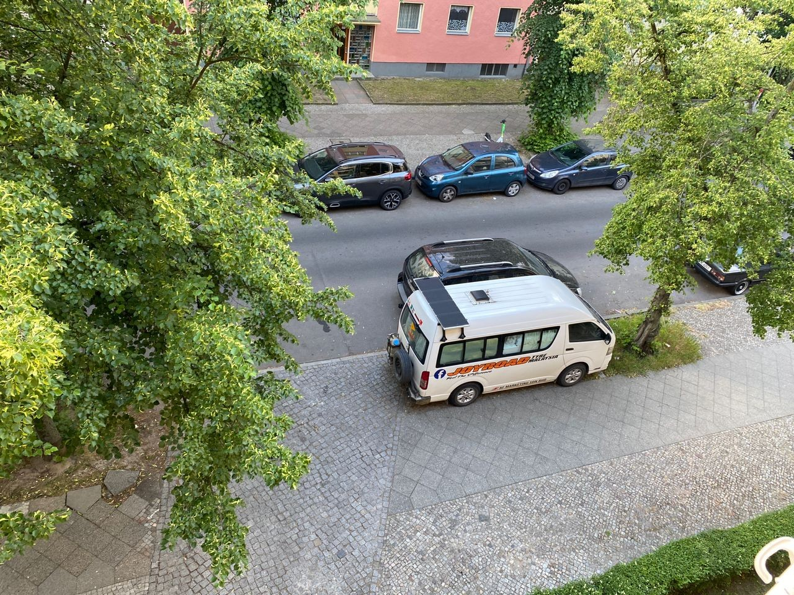
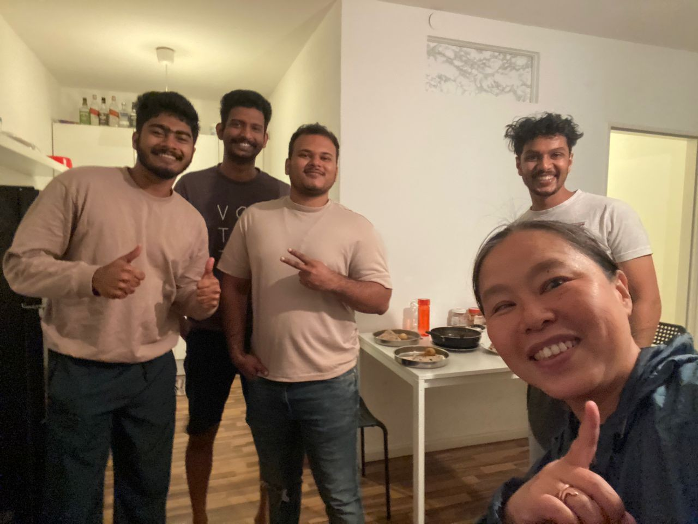
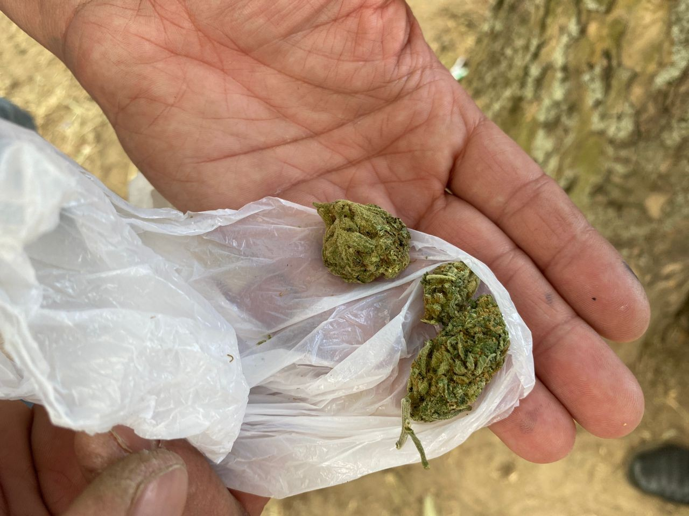
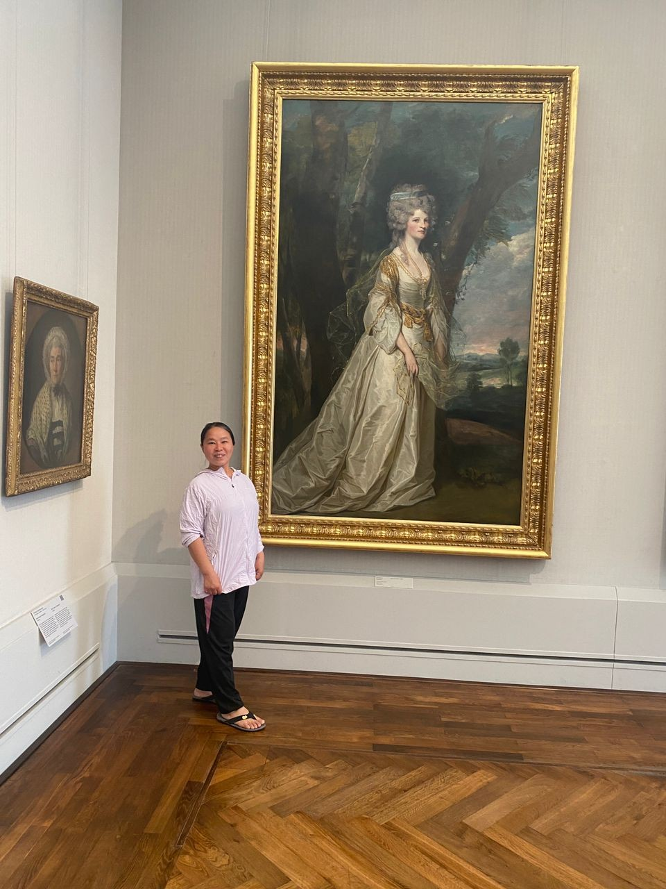
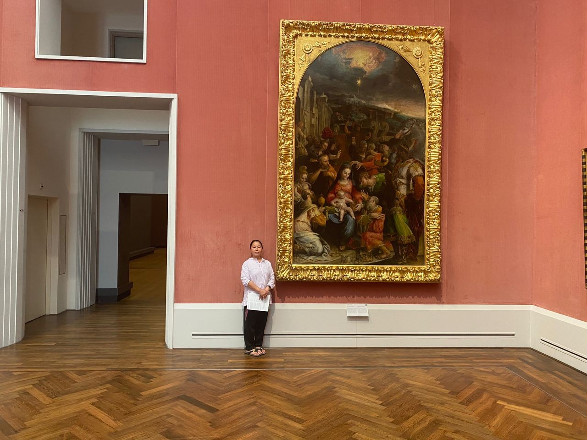

Real Story · 中文
The Taj Mahal young kid appears again — in Berlin.
GPT, still remember the young kid who used his credit card to help me pay the Taj Mahal online booking fee? That young kid, Alwin, later came to Berlin to study MBA.
When I reached Berlin, I slept at the downstairs parking of his place. I overnight there from 20 May to 24 May.
这件事很特别。 因为这是旅程里面的人再次出现。 一个 India 的帮助，后来在 Germany 变成了 Berlin 的落脚点。


Culture Festival
Berlin Culture Festival and a social environment observation.
今天去了 Berlin 的文化节。 这里是一个 cannabis 已经合法化的国家， 现场环境让我很惊讶。
这不是宣传，也不是鼓励。 只是一个 traveller 的社会观察： 同一种东西，在不同国家的法律和文化环境里， 会形成完全不同的公共场景。

Museum Pass
Three-day museum pass: legs almost cramped, heart full.
我买了 Berlin 的 three days museum pass。 我走了第一天和第三天， 双脚 almost cramped， but my heart was full.
那些 museum spaces、painting scale、gallery sequence、room-to-room movement， 对我影响很深。 我觉得这 seriously affected my idea in Chamber design inside TCF — The Civilisation Field.
有些设计不是从电脑想出来的。 是身体走过很多房间之后， 心里才知道： 原来一个文明记忆空间，可以这样安排节奏。


English Memory Summary
Berlin connected India, culture, and future design.
From 20 to 24 May 2024, Tuzi stayed in Berlin at the downstairs parking of Alwin’s place. Alwin was the young man who had once helped her pay for the Taj Mahal online booking fee with his credit card; by this time, he was in Berlin studying MBA.
Berlin also gave Tuzi a culture festival, a legal cannabis environment observation, and a three-day museum pass. The museums nearly cramped her legs, but filled her heart — and later influenced her thinking about TCF Chamber design.
Heart Statement
有些人不是路过一次，而是在另一座城市重新接上旅程。
Alwin first appeared in the Taj Mahal ticket story. In Berlin, he became part of the return route — and the museums became seeds for a future civilisation chamber.